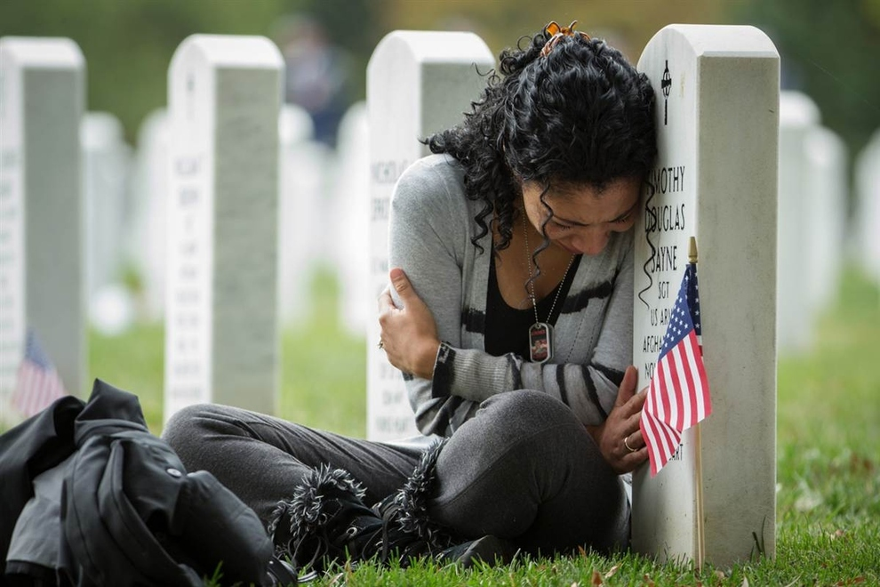

Segurar e apreciar um filhote de cobra
Quando foi o Ato de Coragem?Nas Férias de 2018 em dezembro
Como foi o Ato de Coragem?Um amigo da minha avó tinha acabado de encontar um filhote de Jiboia, e eu por animação pedi pra pegar ela, era linda e se enrousou na minha mão é um animal que adimiro muito
Quais habilidade utilizou para realizar o Ato de Coragem?Segurei na cabeça perto da boca, para ela não me morder, e com pouca força, para não mata-la
| Por que tem esse medo? | |
|---|---|
|  | Tenho medo de perder quem eu amo, porque eu não sei viver sem certas pessoas, e eu me sentiria mal se não conseguisse protegelas, e também é uma coisa que pode acontecer a qualquer momento. |
Foi no meu aniversário de 9 anos, era um dia chuvoso e devido a chuva não pude ir pra aula, logo depois minha mãe chegou em casa e me disse: "Vamos para o shopping então?", fui no shopping, tomei sorvete, ainda sobrou tempo de ir na casa da minha tia Fortunata, e voltar para casa para minha festa de aniversário.
Sim.Já tive vários vila-latas ,mas pretendo criar um filhote de Rottweiler(Tudo sobre Rottweiler). Amo cachorros desde pequeno, gosto de ter um amigo e companheiro, meu primeiro filho antes de casar. Criei essa paixão quando minha tia Josiane ganhou um cachorro dessa raça, achei muito lindo e adoro o intinto de proteção dos cachorros dessa raça. Tive um gato chamado Xanito mais ele fugiu depois de dois meses.
Meu time do coração é o Botafogo de Futebol e Regatas, comecei a torcer por ele mais ou menos aos 8 anos. Eu estava no sítio do meu avô, era uma quarta feira, passaria jogo de noite na globo .Em um certo momento eu acordei com a TV ligada na sala, olhei e vi que era falta para o Botafogo, fiquei olhando e vi o Loco Abreu marcar um gol de cabeça, Me apaixonei pelo esporte e perguntei ao meu avô no dia seguinte: "Como é torcer por um time ?". Depois de uma breve explicação ele me disse que eu deveria escolher um time, e eu disse que escolheria o Botafogo, foi nesse momento que comecei a tomar gosto pelo futebol. (Botafogo de Futebol e Regatas).
Meu héroi favorito é o Homem Aranha, desde pequeno gostei, devido as abilidades e aos primeiros filmes, foi o primeiro héroi com que tive contato, essa paixão cresceu até os dias de hoje. Gosto muito dele, por ser espetacular, por ter muitos vilões e por ter sofrido muitas perdas, mas nunca deixou de ser "o amigo da vizinhança" e nunca deixou de lutar pelo que é certo.
Sempre gostei de computadores e coisas que envolvem tecnologia, minha Tia é da área de Informatica e eu queria mostrar que eu não precisava ser médico pra ganhar dinheiro.